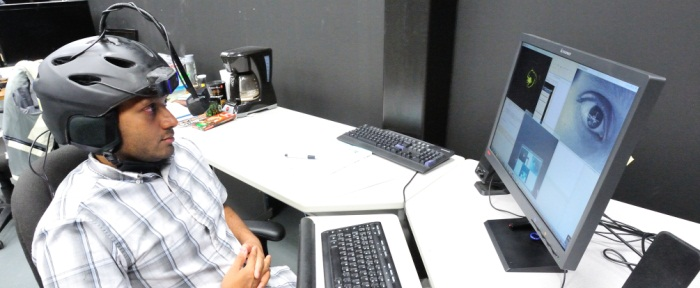
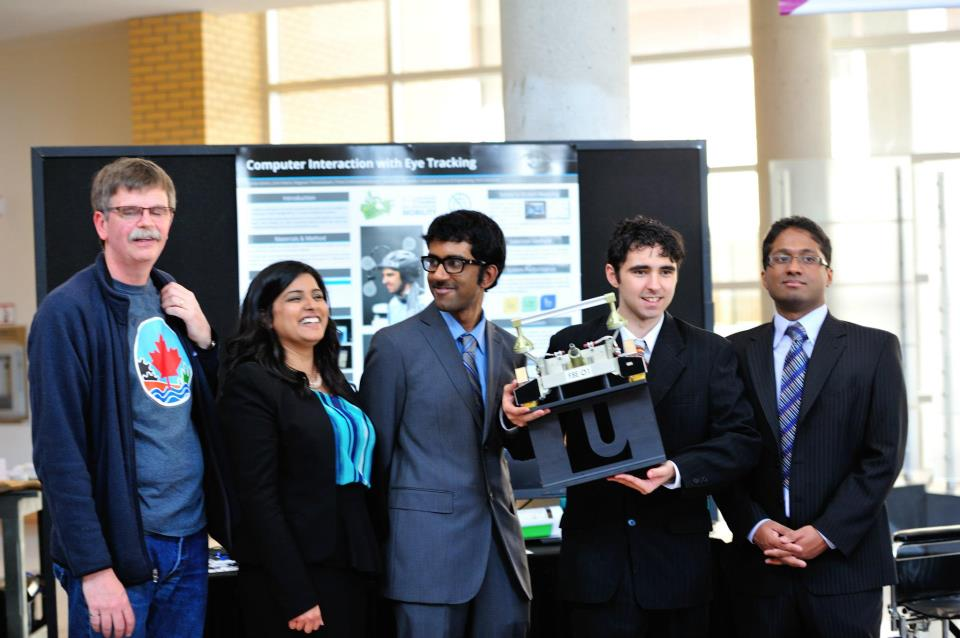

TBD is an award winning organization dedicated to helping the physically disabled continue their lives in a productive and dignified fashion. Our central project is a human-interface device created to allow disabled persons to use computers without the use of their hands.
We are focusing on the disabilities that limit upper body function, such as severe motor neuron disease (or some otherwise debilitating injury causing long-term confinement to a wheelchair) and implementing a solution that allows eye-tracking to assist in human-to-computer interaction. This project was completed with an initial budget of under $1000 CAD and was awarded the first-place 2013 Comdev award for best engineering capstone project.
The project was determined through testing it in a real-world environment with the assistance of disabled students in adapted wheelchairs. The wheelchairs were retrofitted with the eye-tracking system, as well as a personal computer attachment.
The product is being developed by Joshua Sideris, Prasanthan Kodeeswaran, Ragavan Thurairatnam, and Shailja Sahani of the Lassonde School of Engineering at York University, supervised by Michael Jenkin and advised by John Tsotsos.
